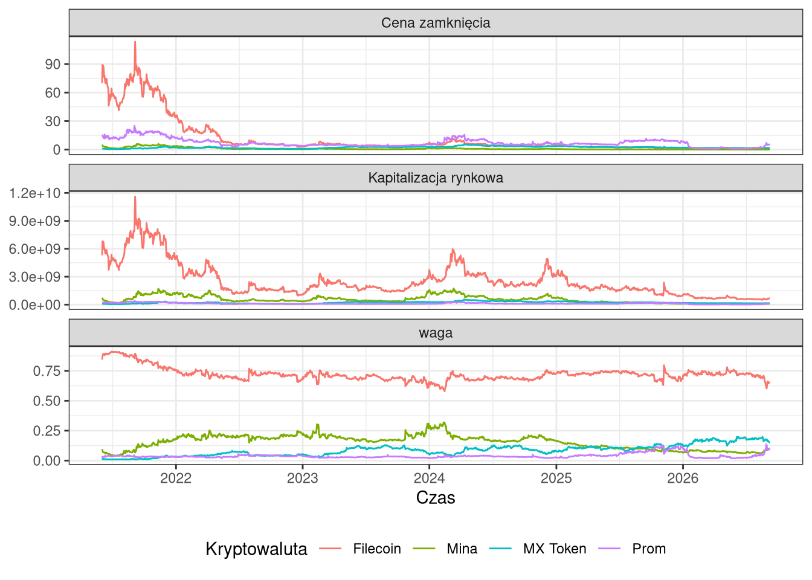
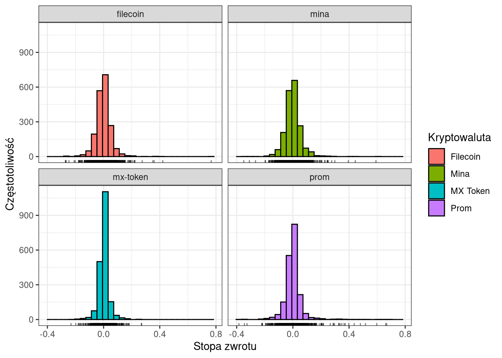
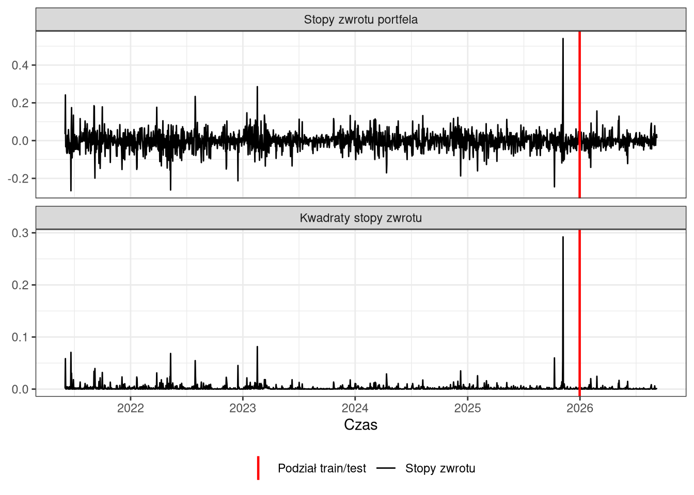
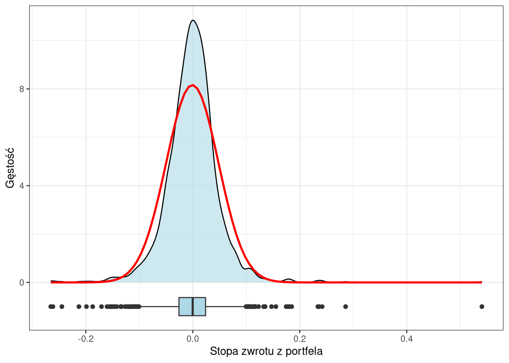
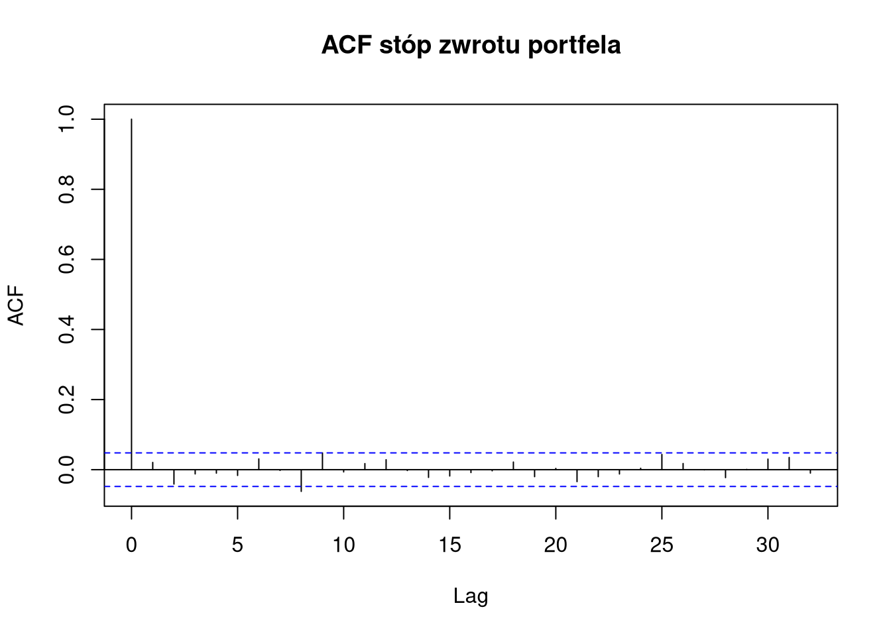
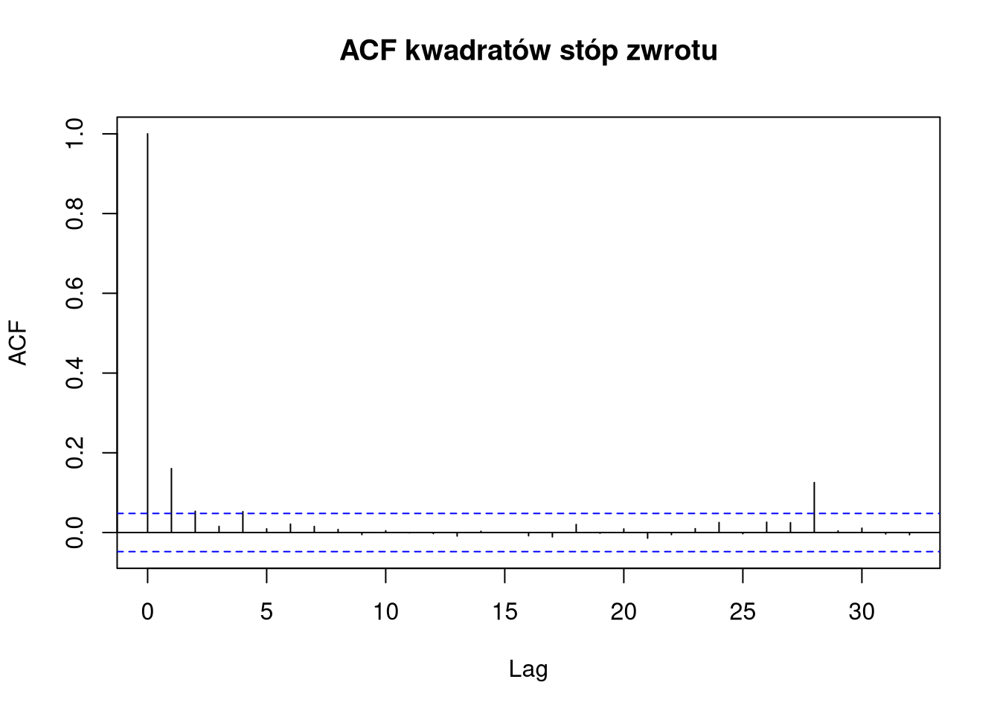
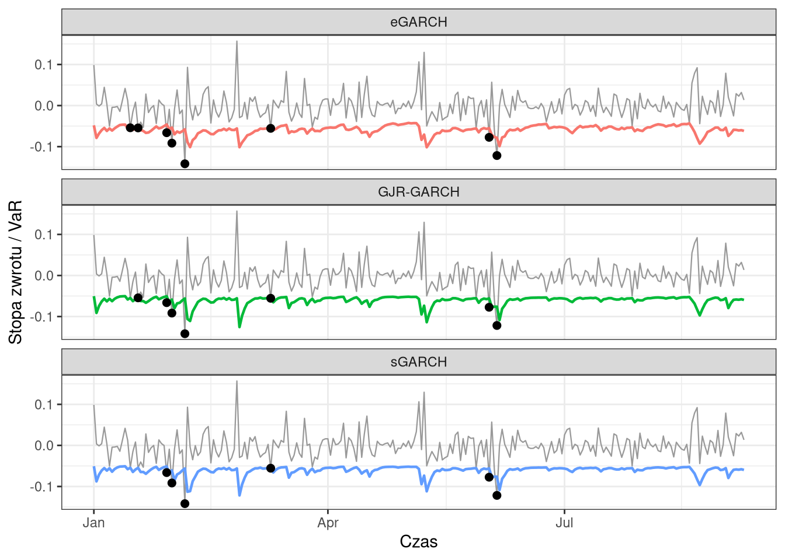

Analiza porównawcza ryzyka w modelach GARCH
1 Streszczenie
Celem badania była ocena wpływu specyfikacji modeli z rodziny GARCH na pomiar i prognozowanie ryzyka portfela kryptowalutowego. Analizę przeprowadzono dla portfela złożonego z czterech kryptowalut: Filecoin, Mina, MX Token oraz Prom, którego dzienne wagi były proporcjonalne do kapitalizacji rynkowej poszczególnych aktywów. Porównano trzy specyfikacje: model bazowy sGARCH(1,1) oraz dwa warianty dopuszczające asymetryczną reakcję wariancji na szoki, GJR-GARCH i eGARCH, w każdym przypadku z warunkowym rozkładem t-Studenta. Analiza obejmuje porównanie oszacowań warunkowej wariancji w okresie in-sample oraz ocenę prognoz wartości narażonej na ryzyko w okresie out-of-sample, wyznaczonych metodą okna kroczącego.
Uzyskane wyniki nie potwierdzają występowania efektu dźwigni – parametry asymetrii pozostają nieistotne w obu modelach rozszerzonych. Wszystkie modele poprawnie opisały podstawową dynamikę zmienności, natomiast eGARCH uzyskał najlepsze dopasowanie w próbie in-sample według log-wiarygodności oraz kryteriów informacyjnych AIC i BIC. W okresie prognozy wszystkie trzy modele okazały się konserwatywne, przy czym pokrycie uzyskane przez eGARCH było najbliższe nominalnemu.
2 Wprowadzenie
Pomiar ryzyka na rynku kryptowalut stanowi wyzwanie odmienne od klasycznych rynków finansowych. Zmienność jest tu wielokrotnie wyższa, obrót odbywa się w trybie ciągłym siedem dni w tygodniu, a struktura rynku pozostaje rozproszona między dziesiątkami giełd o zróżnicowanej płynności. Standardowe miary ryzyka oparte na założeniu stałej wariancji są w tych warunkach nieadekwatne, co czyni modele warunkowej heteroskedastyczności naturalnym narzędziem analizy.
Celem badania jest porównanie, w jakim stopniu wybór specyfikacji z rodziny GARCH wpływa na oszacowania warunkowej wariancji portfela kryptowalutowego oraz na jakość wynikających z nich prognoz Value-at-Risk. Praca składa się z części poświęconej danym i konstrukcji portfela, wstępnej diagnostyki szeregu, estymacji i porównania modeli w okresie in-sample, oceny prognoz VaR w okresie out-of-sample oraz analizy wrażliwości wyników na przyjęte założenia.
3 Zbiór danych i konstrukcja portfela
Przedmiotem analizy jest portfel czterech kryptowalut: Filecoin (FIL), Mina (MINA), MX Token (MX) oraz Prom (PROM). Wybór aktywów został dokonany na podstawie pierwszych liter imion i nazwisk autorów (czyli: F, P, M, M), tak aby kapitalizacja rynkowa kryptowalut była tego samego rzędu wielkości. Dane dzienne dotyczące cen oraz kapitalizacji rynkowej zostały pobrane za okres od 1 czerwca 2021 r. do 8 września 2026 r. (1925 obserwacji) z serwisu CoinMarketCap za pośrednictwem pakietu crypto2.
Dla każdej kryptowaluty wyznaczono dzienną prostą stopę zwrotu zgodnie ze wzorem:
\[ r_{i,t} = \frac{P_{i,t}}{P_{i,t-1}}-1 \] gdzie \(P_{i,t}\) oznacza cenę zamknięcia kryptowaluty \(i\) w dniu \(t\).
Następnie skonstruowano portfel ważony kapitalizacją rynkową. Udział kryptowaluty \(i\) w portfelu w dniu \(t\) określono jako
\[ w_{i,t}= \frac{MC_{i,t}} {\sum_{j=1}^{4}MC_{j,t}} \]
gdzie \(MC_{i,t}\) oznacza kapitalizację rynkową danego aktywa. Przy obliczaniu dziennej stopy zwrotu portfela wykorzystano wagi opóźnione o jeden dzień, dzięki czemu stopa zwrotu z dnia \(t\) nie wykorzystuje informacji o kapitalizacji rynkowej obserwowanej dopiero na koniec tego samego dnia. Ostatecznie stopa zwrotu portfela została wyznaczona jako
\[ r_{p,t}=\sum_{i=1}^{4} w_{i,t-1}\times r_{i,t} \]
Szereg czasowy dziennych stóp zwrotu z portfela podzielono na dwie części:
- Próba ucząca (in-sample): obserwacje do 31 grudnia 2025 r. (1674 obserwacje – 87% całej próby)
- Próba testowa (out-of-sample): obserwacje od 1 stycznia 2026 r. (251 obserwacji – 13% całej próby)
4 Eksploracyjna analiza danych
4.1 Składniki portfela
Na rysunku 1 przedstawiono zmiany cen zamknięcia, kapitalizacji rynkowej oraz wag poszczególnych kryptowalut w czasie. Filecoin charakteryzuje się zdecydowanie największą kapitalizacją rynkową przez większość analizowanego okresu, co przekłada się na jego dominujący udział w portfelu. Udział ten pozostaje na ogół wyraźnie większy niż udziały pozostałych trzech aktywów, choć zmienia się w czasie. W szczególności widoczne są okresy, w których udział Miny lub MX Token zwiększa się kosztem Filecoina. Zmienność udziałów wskazuje, że konstrukcja portfela nie prowadzi do stałych wag, lecz pozwala na bieżąco odzwierciedlać względną wielkość poszczególnych aktywów.

Histogramy przedstawione na rysunku 2 wskazują, że rozkłady wszystkich aktywów są skoncentrowane wokół zera. Zawarte pod histogramami wykresy dywanowe (ang. rug plot) ilustrują pojedyncze obserwacje, świadcząc o występowaniu obserwacji odstających. Rozkłady są więc wyraźnie bardziej skoncentrowane w centrum i jednocześnie mają relatywnie długie ogony niż sugerowałby rozkład normalny.

4.2 Statystyki portfela (ważonej stopy zwrotu)
Podstawowe statystyki dziennych stóp zwrotu portfela przedstawia poniższe zestawienie.
Min. 1st Qu. Median Mean 3rd Qu. Max.
-0.2655978 -0.0253703 -0.0004562 -0.0008973 0.0224418 0.5404989 Średnia dzienna stopa zwrotu wynosi −0,09 procent, co w skali całego okresu przekłada się na istotny spadek wartości portfela i odzwierciedla przecenę Filecoina. Rozstęp międzykwartylowy sięga blisko 4,8 punktu procentowego dziennie, co obrazuje skalę zmienności charakterystyczną dla tej klasy aktywów.
Rysunek 3 przedstawia szereg stóp zwrotu portfela oraz ich kwadratów, z zaznaczonym momentem podziału próby. Oba wykresy jednoznacznie wskazują na występowanie okresów o podwyższonej i obniżonej zmienności, co sugeruje zjawisko grupowania wariancji. Stanowi to pierwszą przesłankę do zastosowania modeli klasy GARCH.

5 Wstępna diagnostyka
Aby zweryfikować zasadność zastosowania modeli z rodziny GARCH, przeprowadzono szereg testów statystycznych. Wszystkie poniższe testy zostały wykonane wyłącznie na próbie uczącej (in-sample).
5.1 Rozkład zmiennej modelowanej
Na wykresie 4 przedstawiono empiryczną funkcję gęstości wyestymowaną za pomocą kernel density estimation, wraz z nałożonym teoretycznym rozkładem normalnym (czerwona linia). Rozkład stóp zwrotu jest silnie skupiony wokół zera, jednak widoczne są wyraźne obserwacje odstające oraz grubsze ogony niż w przypadku rozkładu normalnego, co sugeruje leptokurtyczność.

Wniosek ten został dodatkowo potwierdzony testem Jarque-Bera:
Jarque Bera Test
data: r_train
X-squared = 11106, df = 2, p-value < 2.2e-16Hipoteza zerowa o normalności rozkładu została zatem zdecydowanie odrzucona. Wynik ten wskazuje, że przy modelowaniu stóp zwrotu nie należy zakładać bezwarunkowego rozkładu normalnego bez dodatkowego uzasadnienia. W szczególności obserwowana obecność grubych ogonów jest istotna z punktu widzenia dalszego modelowania ryzyka oraz estymacji Value-at-Risk.
5.2 Stacjonarność
W kolejnym kroku zbadano stacjonarność szeregu stóp zwrotu. W rozszerzonym teście Dickey-Fullera na poziomie 5% odrzucono hipotezę zerową o obecności pierwiastka jednostkowego na rzecz hipotezy o stacjonarności szeregu.
Augmented Dickey-Fuller Test
data: r_train
Dickey-Fuller = -11.373, Lag order = 11, p-value = 0.01
alternative hypothesis: stationaryUzupełniająco przeprowadzono test KPSS: p-value = 0.1 nie daje podstaw do odrzucenia hipotezy zerowej o stacjonarności szeregu.
KPSS Test for Level Stationarity
data: r_train
KPSS Level = 0.086451, Truncation lag parameter = 8, p-value = 0.1Wyniki obu testów nie wskazują na problem niestacjonarności stóp zwrotu, co uzasadnia dalsze modelowanie bez konieczności dodatkowego różnicowania analizowanego szeregu.
5.3 Autokorelacja stóp zwrotu
Funkcja ACF stóp zwrotu (Rysunek 5) portfela nie wykazuje systematycznego wzorca. Poza opóźnieniem zerowym autokorelacje są na ogół niewielkie i w większości mieszczą się w granicach wyznaczonych przez przedziały ufności.

Test Ljunga-Boxa nie pozwala odrzucić hipotezy o braku autokorelacji na standardowym poziomie istotności 5%. Oznacza to, że nie ma silnych dowodów na występowanie systematycznej zależności liniowej pomiędzy kolejnymi stopami zwrotu. Z punktu widzenia dalszego modelowania sugeruje to, że dynamika średniej może być stosunkowo prosta i nie wymaga rozbudowanej struktury ARMA.
Box-Ljung test
data: r_train
X-squared = 16.351, df = 10, p-value = 0.090015.4 Warunkowa heteroskedastyczność
Najważniejszym krokiem przed estymacją modeli GARCH jest udowodnienie zjawiska grupowania wariancji (skupień zmienności). W tym celu obliczono funkcję ACF kwadratów stóp zwrotu (Rysunek 6). Współczynnik dla pierwszego opóźnienia wyraźnie przekracza granice przedziału ufności, a istotne wartości pojawiają się również przy wyższych opóźnieniach. Wskazuje to na obecność zależności w zmienności.

Wynik ten został potwierdzony testem Boxa-Ljunga zastosowanym do kwadratów stóp zwrotu. P-value bliskie 0 pozwala odrzucić hipotezę zerową o braku autokorelacji kwadratów stóp zwrotu.
Box-Ljung test
data: r_train^2
X-squared = 54.338, df = 10, p-value = 4.197e-08
ARCH LM-test; Null hypothesis: no ARCH effects
data: r_train
Chi-squared = 51.681, df = 10, p-value = 1.307e-07Dodatkowym potwierdzeniem jest test mnożników Lagrange’a na obecność efektów ARCH (test ARCH-LM). Wartość p-value bliska 0 oznacza silne odrzucenie hipotezy zerowej o braku efektów ARCH. Powyższe wyniki wskazują więc na występowanie warunkowej heteroskedastyczności, czyli zmiennej w czasie wariancji warunkowej. Jest to bezpośrednie uzasadnienie zastosowania modeli z rodziny GARCH w dalszej części analizy.
6 Specyfikacja modeli GARCH (in-sample)
Na podstawie wstępnej diagnostyki wykazano, że szereg stóp zwrotu nie posiada istotnej autokorelacji liniowej, co pozwala na zastosowanie stałej w równaniu średniej (model ARMA(0,0)). Z kolei silne odrzucenie normalności rozkładu (test Jarque-Bera) skłania do wykorzystania rozkładu t-Studenta (std) dla reszt modelu, który lepiej radzi sobie z modelowaniem “grubych ogonów”.
Do analizy wybrano trzy warianty modeli z rodziny GARCH:
- Standardowy sGARCH(1,1) – podstawowy model zakładający symetryczną reakcję wariancji na szoki.
- Wykładniczy eGARCH(1,1) – model pozwalający uchwycić tzw. efekt dźwigni (asymetryczny wpływ dodatnich i ujemnych szoków na zmienność).
- GJR-GARCH(1,1) - alternatywna specyfikacja modelu uwzględniająca efekt dźwigni. Wprowadza mechanizm asymetrii poprzez dodanie zmiennej binarnej oznaczającej negatywny szok, podczas gdy eGARCH modeluje logarytm wariancji
7 Estymacja in-sample
Tabela 1 przedstawia wyestymowane parametry modeli GARCH wraz z informacją o ich istotności. We wszystkich trzech modelach współczynnik średniej \(\mu\) jest nieistotny statystycznie - średnia stopa zwrotu nie różni się istotnie od zera. Z kolei wysoce istotny (p-value < 0.01) we wszystkich specyfikacjach okazał się parametr kształtu rozkładu t-Studenta (shape), przyjmujący wartości bliskie 4, co potwierdza występowanie zjawiska “grubych ogonów” i silnie odrzuca założenie o normalności rozkładu. W klasycznym modelu sGARCH(1,1) parametry \(\alpha_1\) (reakcja na bieżące szoki) oraz \(\beta_1\) (pamięć wariancji) są w pełni istotne statystycznie, a ich wysokie wartości wskazują na silne utrzymywanie się zmienności w czasie.
Parametry odpowiadające za asymetrię nie potwierdzają występowania efektu dźwigni. W modelu GJR-GARCH współczynnik \(\gamma_1\) wynosi −0.041 i jest nieistotny (p = 0.465), a w modelu EGARCH nieistotny pozostaje \(\alpha_1\) = 0.033 (p = 0.195), odpowiadający za reakcję wariancji na znak szoku. Istotny jest wyłącznie parametr \(\gamma_1\) = 0.278 (p < 0.001), opisujący reakcję na wielkość szoku.
| sGARCH(1,1) | GJR-GARCH(1,1) | eGARCH(1,1) | |
|---|---|---|---|
| mu | -0.0002 | -0.0001 | 0.0000 |
| omega | 0.0003** | 0.0003** | -0.5037* |
| alpha1 | 0.1774*** | 0.1963*** | 0.0333 |
| beta1 | 0.7140*** | 0.7217*** | 0.9185*** |
| shape | 4.0650*** | 4.0630*** | 4.0897*** |
| gamma1 | - | -0.0412 | 0.2784*** |
| Uwaga: Wykorzystano odporne błędy standardowe (robust standard errors). Istotność statystyczna: *** p < 0.01, ** p < 0.05, * p < 0.10. | |||
Porównanie kryteriów informacyjnych w tabeli 2 wskazuje jednoznacznie na najlepsze dopasowanie modelu eGARCH (najwyższa log-wiarygodność, najniższe BIC i AIC), jednak różnice nie są znaczne.
Diagnostyka standaryzowanych reszt nie wskazuje na istotne problemy ze specyfikacją żadnego z modeli. Testy Ljunga-Ljung-Boxa dla standaryzowanych reszt nie wykazują istotnej autokorelacji, a analogiczne testy przeprowadzone dla kwadratów standaryzowanych reszt oraz testy ARCH-LM nie wskazują na pozostające efekty ARCH. Oznacza to, że zastosowane modele skutecznie opisują znaczną część zależności występującej w warunkowej wariancji szeregu.
| logLik | AIC | BIC | |
|---|---|---|---|
| sGARCH(1,1) | 2 907.3 | −3.4675 | −3.4513 |
| GJR-GARCH(1,1) | 2 907.6 | −3.4667 | −3.4472 |
| eGARCH(1,1) | 2 916.0 | −3.4766 | −3.4572 |
8 Prognozowanie Value-at-Risk (out-of-sample)
W celu oceny jakości prognoz ryzyka przeprowadzono analizę Value-at-Risk w okresie out-of-sample – 251 dni. Dla każdego z trzech modeli – sGARCH, eGARCH oraz GJR-GARCH – zastosowano ruchome okno estymacyjne o długości 1000 obserwacji. Parametry modeli były ponownie estymowane każdego dnia, a następnie wyznaczano prognozę VaR na jeden dzień naprzód. Analizę przeprowadzono dla poziomów ufności 95% i 99%.
Zestawienie liczby przekroczeń prognozowanego progu VaR przez rzeczywiste stopy zwrotu portfela (tzw. exceedances) prezentuje Tabela 3. Dla poziomu ufności 95% wartość oczekiwana wynosiła około 12,6 przekroczeń. Wyniki wskazują, że wszystkie estymowane modele przyjęły postawę konserwatywną (przeszacowywały ryzyko) – rzeczywista liczba przekroczeń wyniosła od 6 dla modelu sGARCH (2,39% dni) do maksymalnie 8 dla modelu eGARCH (3,19% dni). Z kolei dla bardziej restrykcyjnego poziomu ufności 99%, gdzie spodziewano się 2,51 przekroczeń, najdokładniejszy okazał się model eGARCH, który odnotował dokładnie 2 przekroczenia (wskaźnik na poziomie blisko 0,8%). Pozostałe modele (sGARCH i GJR-GARCH) zanotowały po jednym przekroczeniu.
| n | expected 95% | actual 95% | rate 95% | expected 99% | actual 99% | rate 99% | |
|---|---|---|---|---|---|---|---|
| GJR-GARCH | 251 | 12.6 | 7 | 0.0279 | 2.51 | 1 | 0.00398 |
| eGARCH | 251 | 12.6 | 8 | 0.0319 | 2.51 | 2 | 0.00797 |
| sGARCH | 251 | 12.6 | 6 | 0.0239 | 2.51 | 1 | 0.00398 |
Wizualizację dynamiki prognoz na tle rzeczywistych stóp zwrotu (dla \(\alpha = 0.05\)) przedstawiono na wykresie 7. Prognozy wszystkich trzech modeli mają bardzo podobny przebieg i wyraźnie obniżają się w okresach podwyższonej zmienności. Przekroczenia VaR występują w kilku okresach charakteryzujących się większymi ujemnymi zmianami stóp zwrotu, co wskazuje, że modele reagują na wzrost ryzyka poprzez zwiększenie prognozowanego poziomu potencjalnej straty.

9 Podsumowanie
Przeprowadzone badanie potwierdziło występowanie charakterystycznych dla finansowych szeregów czasowych właściwości, które uzasadniają zastosowanie modeli klasy GARCH. Stopy zwrotu portfela okazały się stacjonarne i nie wykazywały istotnej autokorelacji, podczas gdy ich kwadraty charakteryzowały się silną zależnością czasową. Oznacza to, że zmienność portfela nie jest stała w czasie, lecz występują okresy jej podwyższonego i obniżonego poziomu.
Spośród analizowanych modeli eGARCH osiągnął najlepsze dopasowanie in-sample. Uzyskał najwyższą wartość log-wiarygodności oraz najniższe wartości AIC i BIC. W analizie VaR wszystkie trzy modele dawały stosunkowo konserwatywne prognozy, tj. liczba rzeczywistych przekroczeń była niższa od oczekiwanej. eGARCH charakteryzował się jednak liczbą przekroczeń najbliższą wartości oczekiwanej zarówno dla VaR 95%, jak i VaR 99%. Ostateczny wybór modelu powinien zatem opierać się przede wszystkim na ocenie prognozy VaR wykonanej na okresie testowym, a nie wyłącznie na kryteriach dopasowania in-sample.
Całość wyników wskazuje, że uwzględnienie zmienności warunkowej jest istotne dla prawidłowej oceny ryzyka portfela kryptowalut, a wybór specyfikacji GARCH może wpływać zarówno na oszacowania wariancji, jak i na prognozy ekstremalnych strat. Szczególnie istotne jest zatem zestawienie jakości dopasowania modeli z ich rzeczywistą skutecznością prognozowania ryzyka poza próbą.